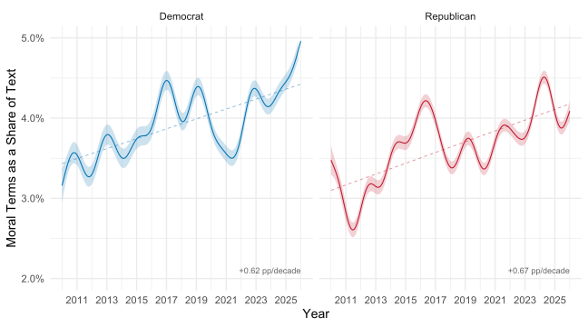
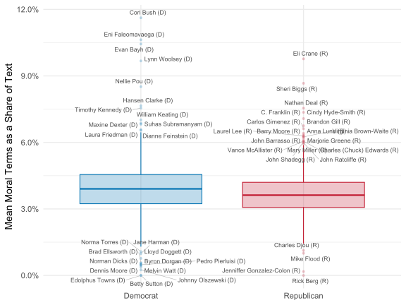

Moralized Policy Communication and Conflict Extension
Aarhus University
An Issue of Right and Wrong
These words can help give extra power to your message. In addition, these words help develop the positive side of the contrast you should create with your opponent, giving your community something to vote for!
Share, change, opportunity, legacy, challenge, control, truth, moral, courage, reform, prosperity, crusade […]
Often we search hard for words to define our opponents. Sometimes we are hesitant to use contrast. […] Apply these to the opponent, their record, proposals and their party.
Decay, failure (fail) collapse(ing) deeper, crisis, urgent(cy), destructive, destroy, sick, pathetic, lie […]
Incentives to Moralize
In a difficult media landscape, stating your position with moral conviction has its payoffs
First: Getting Engagement
- Moralized communication is more viral, Van Bavel et al. (2024), and politicians often strategically use conflict to get attention, Jacob, Lelkes, and Westwood (2026)
- Moralization mobilizes partisans, Simonsen and Bonikowski (2022), Jung (2020)
- It can serve to get engagement with issues beneficial to communicator, Wang and Inbar (2021)
Second: Drawing Contrast
- Seeking distance from one’s opponents, Widmann and Simonsen (2025)
- Moralization of value statements exacerbated the effect of (dis)agreement on them, Jung and Clifford (2025)
- Also elites affected, learning moralized communication style produced elite polarization in the Senate, Theriault and Rohde (2011)
Conflict Extension
Elite polarization and homogenization did not impact mass attitudes overall (ideological realignment), but heavily impacted belief systems of partisans (conflict extension), Layman and Carsey (2002)
Main Worry
Comprehensive worldviews and context-insensitive attitudes, all mapped into partisan identities, Garrett and Bankert (2020)
This could result in more sorting and greater ideological rifts between party camps, Layman, Carsey, and Horowitz (2006), Levendusky (2010), Bergman (2021)
Moralization and Ideology
Politicians set ideological norms to be followed, Groenendyk, Kimbrough, and Pickup (2023)
Moving Attitudes to Moral Domain
- Moral Recognition: attitude moves from being a preference to something with moral imperative, Skitka et al. (2021)
- This makes them universal, resistant to change, concerned with ends more than means and closed to compromise, Skitka and Morgan (2014)
- Same as difference between “hard” and “easy”, Carmines and Stimson (1980), “symbolic” and “operational”, Ellis and Stimson (2012)
Attitudes Constrained by Morality
There are two ways of how morality can constrain attitudes
Constraint within issues
Constraint between issues
- Dynamic Constraint: What impacts one attitudes should spill over to attitudes on related subjects, Coppock and Green (2022), Turner-Zwinkels and Brandt (2022)
- Psychological source of interdependence of idea-elements in quasi-logic of appeals to values and morality, Converse (2006)
- Importantly, this does not depend on individual’s sophistication, Goren (2004)
Hypotheses
Attitude Robustness
H1: Moralized policy communication strengthens attitude robustness on issues where prior attitudes are weak.
Ideological Constraint
H2: Moralized policy communication increases attitudinal constraint across related issues.
Research Design
- Describe the prevalence and temporal trends in the use of moralized policy communication.
- Experimentally test the effects of moralized policy communication on the belief systems of predisposed (favorable) audiences.
Methods
- Computational analysis of elite communication
- Survey experimental design
Analysis of Communications
- E-newsletters, direct channel to constituents, unmoderated, widely used, free format (U.S. settings)
- DCInbox dataset: coordinated effort to collect all these newsletters from 2010 until now (N = 164,750; after cleaning)
- Thorough cleaning needed (code, spanish, old encodings…)
- Splitting into segments: Haiku 4.5 prompted to create segments, own labels and classify into CAP policy domains (N = 792,279)
Senator Jack Reed’s e-Newsletter Dear ,? I hope you and your family have are having a positive start to 2026.? As Congress kicks off the year, I wanted to share some of what I am working on this week in Rhode Island and Washington, DC.? To learn more, clickHERE ?or the image below. ??????? Jack Reed United States Senator? CONTACT WEBSITE PLEASE REPLY USING THE CONTACT LINKS ABOVE MANAGE MY SELECTIONS |
HOUSE REPUBLICANS’ TOP PRIORITY‚ĶSHOWER-HEADS? On Tuesday, House Republicans reconvened Congress after a 23-day recess, and their first legislative priority for the New Year was . . . shower-heads. Seriously. During our Rules Committee hearing, I discussed the myriad of issues Coloradans expect Congress to tackle, rather than these ridiculous proposals. It’s time my colleagues across the aisle get serious and join Democrats in tackling real issues like making life more affordable for folks across our state. THE MARSHALL FIRE - FOUR YEARS LATER Last week, I had the privilege and honor of joining constituents and our brave first responders in Louisville for the fourth anniversary of the Marshall Fire. While we have made much progress, the road to recovery has been long and difficult for so many, and there is still much work to do. My team and I are committed, as always, to standing with the community and going above and beyond to assist all those impacted by that terrible fire, as we fight for serious reforms on wildfire mitigation, consumer protections and more in Congress. Pictured left: Congressman Neguse speaks to group of constituents at Marshall Fire Anniversary event. Pictured right: Congressman Neguse speaks to a constituent at Marshall Fire Anniversary event. WHAT ELSE HAVE WE BEEN WORKING ON? üá∫üá≤ As I said during Trump’s second impeachment trial, for centuries we accepted the peaceful transfer of power as fact. Five years ago, that all changed, when our Capitol - and our republic - were attacked. Let us never forget the brave law enforcement officers who put their lives on the line to defend our democracy. üèÖNominations Requested!
Data

Policy Classifier:
Policy content: 62.7 %
Other: constituency service, greetings, polls, personal messages, symbolic issues, commemorations, Judge-Lord, Powell, and Grimmer (2026)
Validation: Another transformer-based classifier, trained specifically for the task, Aroyehun et al. (2025)
| Category | Percentage (%) |
|---|---|
| Health | 12.3 |
| Macroeconomics | 6.6 |
| Defense | 5.1 |
| International Affairs | 4.0 |
| Domestic Commerce | 3.9 |
| Education | 3.8 |
| Law and Crime | 3.7 |
| Immigration | 3.0 |
| Energy | 2.9 |
| Social Welfare | 2.4 |
| Transportation | 2.3 |
| Environment | 2.3 |
| Agriculture | 2.1 |
| Civil Rights | 2.0 |
| Labor | 1.7 |
| Technology | 1.5 |
| Public Lands | 1.2 |
| Housing | 1.0 |
| Foreign Trade | 0.9 |
Moralized Communication
- Keywords from dictionary developed by Simonsen and Widmann (2025)
- Drawing from Moral Foundations Theory, it uses previously developed dictionaries, Jung (2020), and other adaptations to political settings
- Performs better than alternatives
- Binary measurement: moral language of any kind is present in the segment
Moralized Communication
Results: Moralizing Policy

Results: Lawmakers

Results: Policy Domain

Experimental Design
- For a limited time, repeatedly send excerpts from real newsletters on a specific topic, then survey them (N = 2,000)
- Two waves survey experiment, 5 days apart, external validity
Experimental stimuli
- Newsletters will always come from representatives of both parties and will be limited to the last two years
- Only newsletters in which a policy issue could be confidently identified will be selected
- Respondents will receive many e-newsletters excerpts on the same issue
Randomization
- Randomization to policy issue from a list
- Respondents will be randomized to receive either moralized or non-moralized communication on the issue
- Specific newsletters displayed will be randomized for each batch; there will usually be four newsletter excerpts per batch (two for the last batch)
- Texts will be checked for confounding across individual issues × treatments — they should be informationally equivalent
Adjustments
- All identifying information (e.g. proper nouns) will be manually replaced in treatments by generic terms (New York City → cities)
Example Experimental Stimulus: Housing
Cities across America are at the epicenter of the housing crisis, with nearly half of residents in the hardest-hit areas spending a third of their income or more on rent. Even more unacceptable is the fact that nearly 25 percent of those residents spend more than half of their income on rent. These astronomically high housing costs are placing a huge financial burden on local families. And while America’s Public Housing Authorities are far from perfect, with plenty of issues of their own that government must address, exorbitantly high costs make public housing all the more important. […] Every family in this country deserves to live with respect and dignity in their homes, and delivering real results for these families must be a priority for this Congress.
Dependent Variables
Attitude Robustness
Respondent congruent with the messaging. Regardless of specific means and ways.
When a tenant falls behind on rent due to unexpected expenses, landlords should have to provide a grace period and clear notice before eviction. [GRACE PERIOD]
Landlords should be allowed to evict tenants only for just cause (e.g., nonpayment or lease violations), not simply to raise the rent for a new renter. [JUST CAUSE]
When rents rise sharply, the government should require landlords to provide advance notice and limit unusually large rent increases. [ADVANCE NOTICE]
The government should strictly regulate rents, setting clear caps on how much landlords can charge and increase each year. [FULL REGULATION]
Dependent Variables
Dynamic Constraint
Alignment in attitude toward different policies related by similar principles or logic.
Employers should treat workers fairly and avoid sudden or arbitrary terminations that leave employees without time to adjust. [EMPLOYMENT]
Health insurance companies should not impose sudden or excessive cost burdens on patients, especially when people depend on stable coverage. [HEALTHCARE]
The government should crack down on oil and fuel companies that sharply raise gas prices during emergencies or supply shortages. [ENERGY]
Analysis
Moralized Communication Effect (DiD)
- Within-subject change from pre- to post-treatment
- Identifies differential effect of moralized vs. non-moralized framing
\[ Y_{it} = \alpha_i + \beta_1 \text{Post}_t + \beta_2 (\text{Post}_t \times \text{Moralized}_i) + \varepsilon_{it} \]
where \(i\) indexes respondents and \(t \in \{\text{Wave 1}, \text{Wave 2}\}\), with standard errors clustered by respondent.
Treatment Effect (Cross-sectional)
- Between-subject difference in Wave 2 outcomes
- Identifies effect of each treatment arm relative to control
\[ Y_i = \alpha + \beta_1 \text{Moralized}_i + \beta_2 \text{NonMoralized}_i + \varepsilon_{i} \]
where \(i\) indexes respondents observed at Wave 2.
Work in Progress / Comments Welcomed!
References